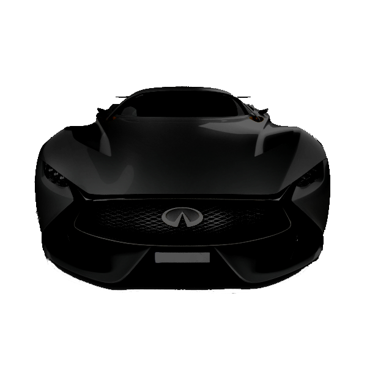
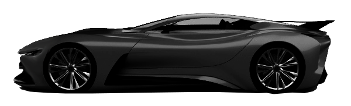

Product

The result of a partnership between Ferrari and the Gran Turismo™ video game series,
the spectacular Vision Gran Turismo is a futuristic single-seater sporting a more
extreme version of the V6 engine adopted on the 296 GTB, 296 GTS and 296 GT3 and
that also powers the new Ferrari 499P hypercar that will be seen at Le Mans next year.
In this, the 25th year of the Gran Turismo™ video games,
Ferrari was tasked by the smash-hit series founder Kazunori Yamauchi to
"Design your rendition of the ideal GT for us." The result is jaw-dropping,
and sure to be one of the most popular vehicles in the game.
The Vision Gran Turismo is designed to be incredibly aerodynamic, with the rear wing,
diffuser and air vents on the wheelarches all carefully designed to give as much
downforce as possible, while a 3 litre, V6 hybrid engine combines with three electric
motors to provide a massive 1356cv.
Inside the car, the focus is on the driver, while hi-tech, transparent materials
echo the exterior see-through engine cover with the more complex make-up of the
steering wheel components on display.
